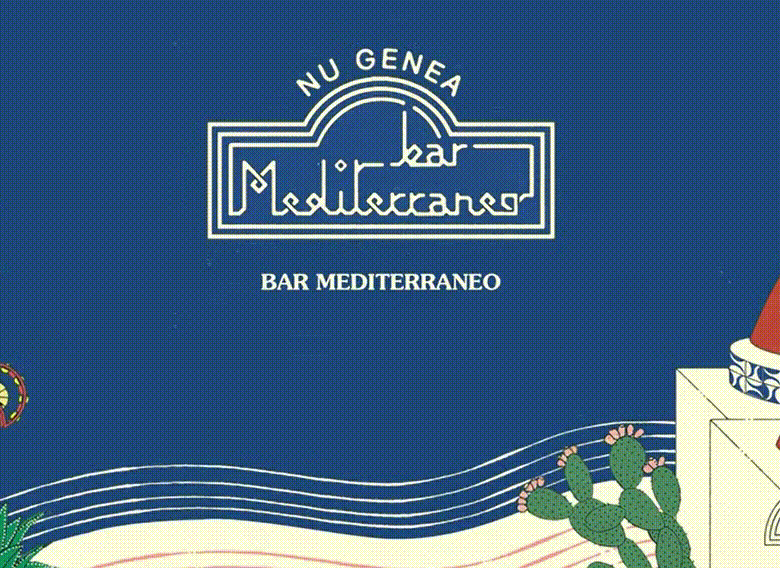

<!DOCTYPE html>

<html>

<head>
    <meta charset="utf-8">
    <meta http-equiv="X-UA-Compatible" content="IE=edge">
    <title></title>
    <meta name="description" content="">
    <meta name="viewport" content="width=device-width, initial-scale=1">
    <link rel="stylesheet" href="">
</head>

<body>
    <!--[if lt IE 7]>
            <p class="browsehappy">You are using an <strong>outdated</strong> browser. Please <a href="#">upgrade your browser</a> to improve your experience.</p>
        <![endif]-->

    <script src="" async defer></script>
</body>

</html>

<!DOCTYPE html>
<html lang="en">

<head>
    <meta charset="UTF-8">
    <meta name="viewport" content="width=device-width, initial-scale=1.0">
    <title>Music Card</title>
    <link href="https://cdn.jsdelivr.net/npm/bootstrap@5.3.3/dist/css/bootstrap.min.css" rel="stylesheet"
        integrity="sha384-QWTKZyjpPEjISv5WaRU9OFeRpok6YctnYmDr5pNlyT2bRjXh0JMhjY6hW+ALEwIH" crossorigin="anonymous">
    <link rel="stylesheet" href="https://cdn.jsdelivr.net/npm/bootstrap-icons@1.11.3/font/bootstrap-icons.min.css">
    <link rel="stylesheet" href="style.css">
</head>

<body>

    <main>
        <div class="container mt-2 px-2">
            <div class="row mt-2">
                <div class="col-lg-8 col-md-6 col-sm-12">
                    <header>
                        <h1 class="display-4">Nu Genea - Bar Mediterraneo</h1>

                    </header>
                    <article class=" text-justify">
                        <p>
                            Four years after
                            Nuova Napoli, Nu Genea are back with Bar Mediterraneo, a new album and journey, which
                            projects the sounds of the Neapolitan duo formed by Massimo Di Lena and Lucio Aquilina even
                            further.
                        </p>
                        <p>Nu Genea's Bar Mediterraneo is an idea of a shared place where people meet and fuse together;
                            a space
                            that leaves its doors open to travellers and their lives, always exposed to the whims of
                            fate. Some
                            of this can be experienced through the multitude of sounds that come together in the tracks,
                            layers
                            of different acoustic instruments, voices and synthesizers merging in a unique musical
                            blend.</p>
                    </article>
                </div>
                <div class="col-lg-4 col-md-6 col-sm-12">
                    <div class="card px-2" style="width: 16rem;">
                        <audio id="musicPlayer" src="bar_mediterraneo.mp3" hidden></audio>
                        
                        <div class="card-body">
                            <h5 class="card-title text-center">Bar Mediterraneo</h5>
                            <div class="d-flex justify-content-center">
                                <button id="playButton" class="btn btn-lg">
                                    <i id="playPauseIcon" class="bi bi-play-circle-fill"></i>
                                </button>
                            </div>
                            <div class="volume-control-container d-flex align-items-center justify-content-center">
                                <i class="bi bi-volume-down-fill"></i>
                                <input type="range" id="volumeControl" class="form-range volume-slider" min="0" max="1"
                                    step="0.1" value="1">
                                <i class="bi bi-volume-up-fill"></i>
                            </div>
                            <div class="progress" role="progressbar" aria-label="Basic example" aria-valuenow="75"
                                aria-valuemin="0" aria-valuemax="100">
                                <input class="progress-bar" type="range" id="progressSlider" class="form-range" min="0"
                                    max="100" value="0" step="1" style="width: 100%;">
                            </div>
                            <div class="d-flex justify-content-between">
                                <span id="currentTime">0:00</span>
                                <span id="totalDuration">0:00</span>
                            </div>
                        </div>
                    </div>
                </div>
            </div>
        </div>
    </main>
    <script src="script.js"></script>
    <script src="https://cdn.jsdelivr.net/npm/@popperjs/core@2.11.8/dist/umd/popper.min.js"
        integrity="sha384-I7E8VVD/ismYTF4hNIPjVp/Zjvgyol6VFvRkX/vR+Vc4jQkC+hVqc2pM8ODewa9r"
        crossorigin="anonymous"></script>
    <script src="https://cdn.jsdelivr.net/npm/bootstrap@5.3.3/dist/js/bootstrap.min.js"
        integrity="sha384-0pUGZvbkm6XF6gxjEnlmuGrJXVbNuzT9qBBavbLwCsOGabYfZo0T0to5eqruptLy"
        crossorigin="anonymous"></script>
</body>

</html>